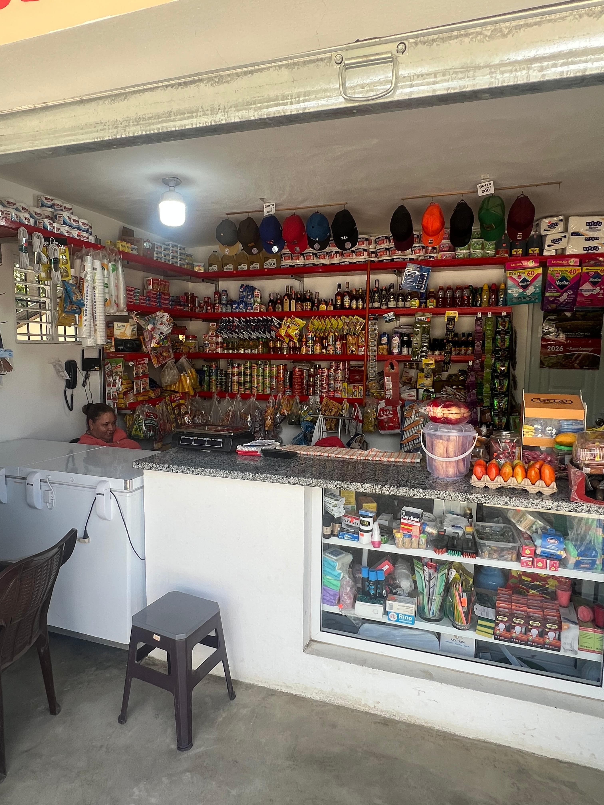

Un negocio local creado para servir a la comunidad con cercanía y calidad.
Ser el minimarket de referencia por buen servicio y precios accesibles.
Brindar atención rápida y amable con productos básicos y bebidas.
Responsabilidad, respeto y compromiso con nuestra comunidad.
Minimarket Espinal nace para cubrir las necesidades diarias del barrio, ofreciendo un espacio seguro, limpio y confiable.
